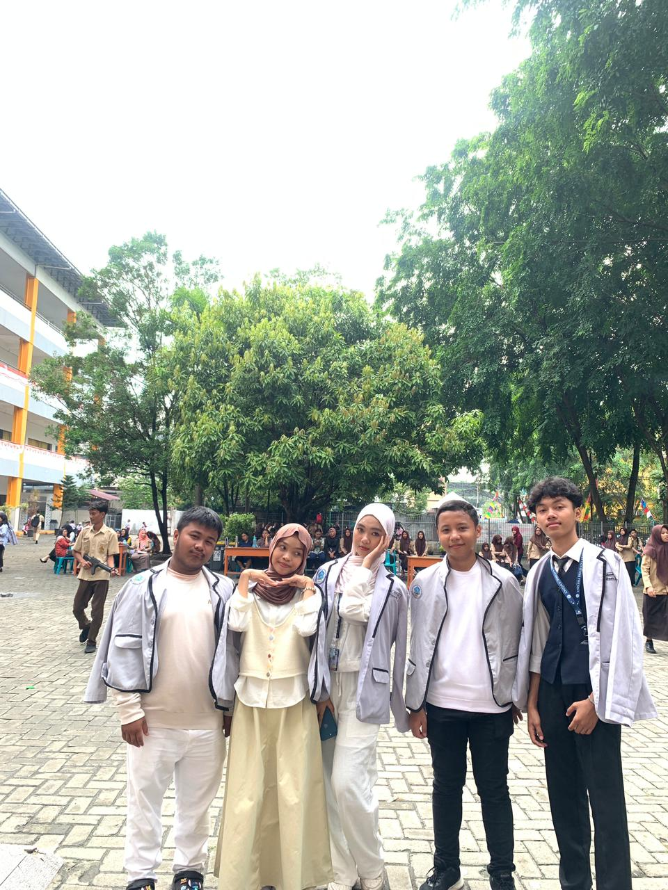
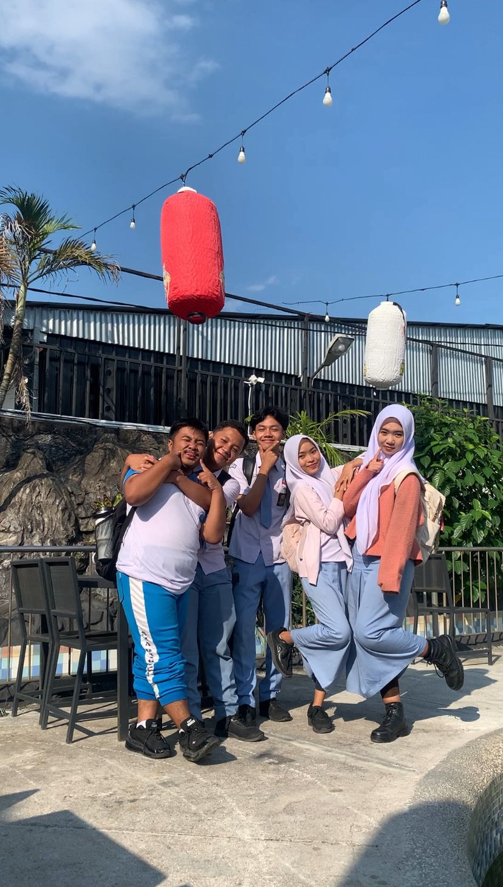
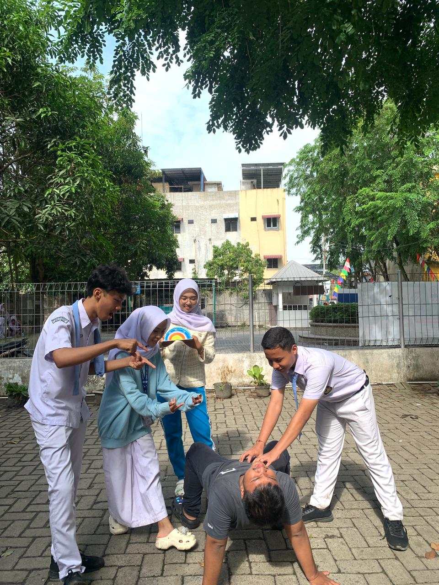
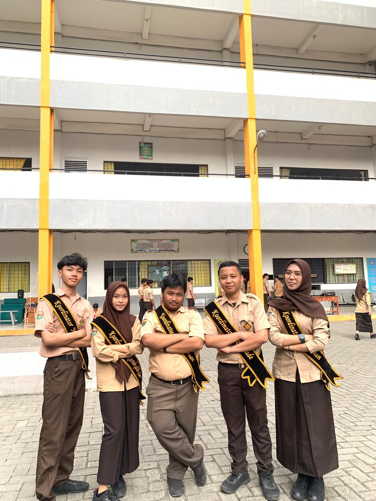
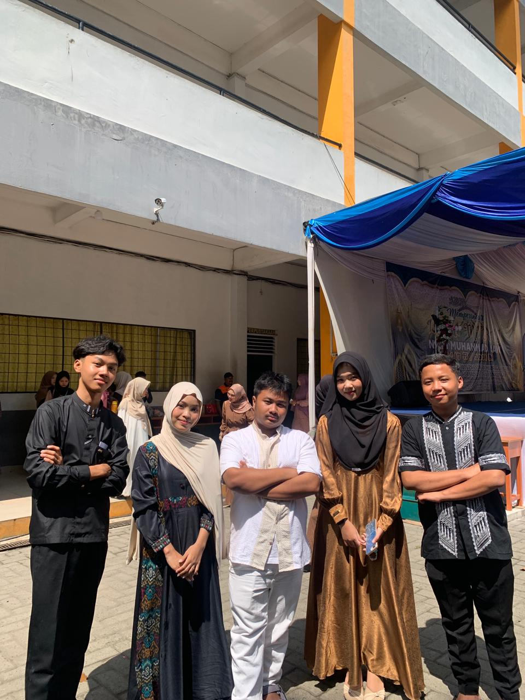
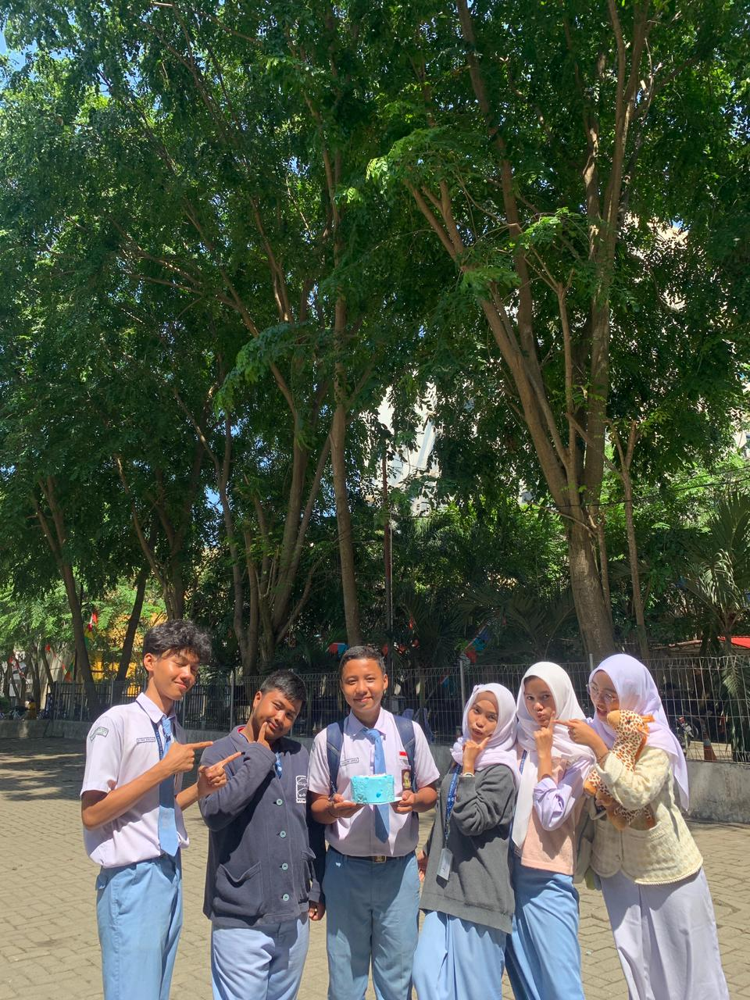

Sebuah kejutan spesial dari kita di Potobrut (anjay) untuk perjalanan baru kau ke Malaysia eaa slebew.






to: cinta impor orang kaya,
dek, makasii kali yaa untukk ±2 tahunnya sama kamii, dan sekarang pas tau kau harus nerima takdirmu untuk lanjut di malaysia, kami rasanya gatauu mauu ikutt senengg atauu sedii.. senengg karenaa bisa ngeliatt kau ga egois sama diri sendirii, bisaa ke tahap lingkungann yang baruu, kumpulll sama keluargaa lengkapp, jujurr ituu buat kami senenggg kaliii.. tapii sedii karena tau bakall banyak sesuatu yangg beda disanaa maupunn disiniii, kita ga bakalan main sesering biasanya, even mau ketemuu aja atau papas papasan dijalann gabisaa, bakall kangenn kangennnnn kalii sama suasana kecill yang mungkin selamaa ini keliatannya biasaa ajaa..
kami cuma mau ngasii tau ke kauu kaloo selamaa 2 tahunn inii, kau ituu berartiii kalii dekk, kaloo ga gegaraa kauu, kitaa semuaa gabakall bisaa jadi circle, diliatt darii perdi duluu pendiemmm kalii, apalagii dapaa. kalo bukan kau yang satui siapaa lagii??.. mungkinn kamii jarangg ngomongg langsungg, tapii banyaakkkkkk kaliii hari yang kamii lewatii tuhh rasanyaa jauhh jauhh jauhhh lebii ringann gegara kauu, darii asbun kauu yangg kadang gabisa dicerna, jokes yang ga lucu tapi lucu, tapii mungkinn kau ga sadarr kaloo hal sekecill ituu bisaa buatt orangg lupaa dengan masalahnyaa. Dan menurut kamii gaa semua orangg bisa setuluss itu bertemann selamaa itu tanpa bosenn.
oiyaa satuu lagii, jangann pernaa takutt kalauu nantii semuanyaa berubah yaa? mungkin emangg ga bakalann bisa ketemu kea biasanyaa, kalopunn nantii kitaa semuaa udaa sibukk masingg masingg, ituu tetepp kamii yaa, dirii kamii yangg kau kenall bakall tetapp ada kokk, karenaa juga some people change for the better, grubb kitaa jugaa bakall ga seramee biasanyaa, tapii bakalann tetapp adaa komunikasiii kecill. Dan kau jugaa mau sejauhh apapunn tempatnyaa, kamii harapp tetepp jadii Cinta yang kamii kenall, mauu sama siapa punn disanaa. Makasii yaa udaa jadii bagiann darii 2 tahun yangg gaakan perna bisa dilupainn. Hati hatii di jalann menuju hidupp barumu dekk, semogaa malaysia nerimaa versi terbaik darii dirimuu🤍
Kami harap, sejauh apapun nanti kau pergii, semoga kau ketemu banyakkk hal baik disanaa. ketemu orang orang yang tulussnyaa sama keaa kauu, lingkungan yang bikinn kau berkembangg, dan pengalaman yang bisa ngerubah kauu jadi versi yang jauhh lebih baik lagii. some people change for the better, dan kamii harap malaysia nanti jadii salah satu tempat yang bikin kauu makinn bahagia, makin kuattt, dan makin nemuin diri kauu sendiriii 🤍